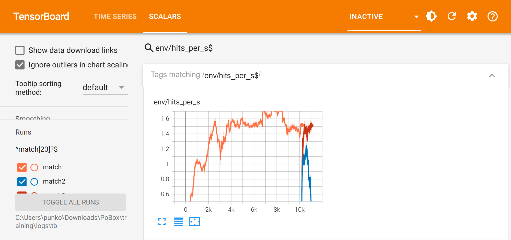
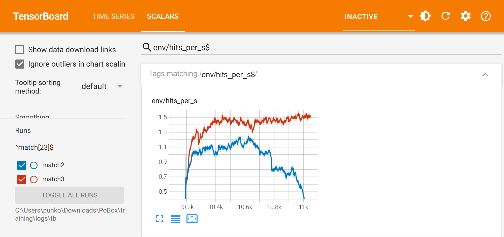
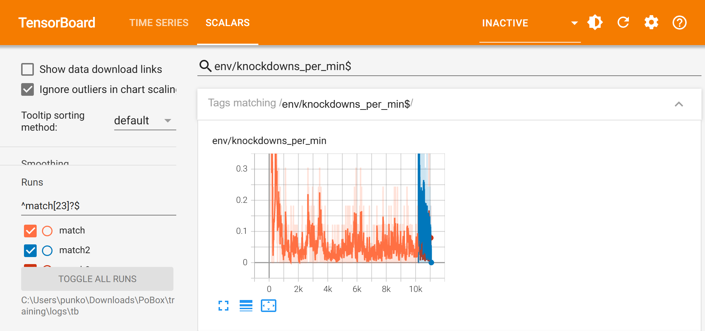
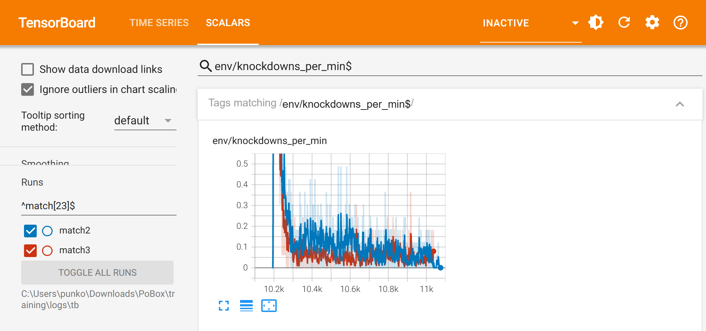
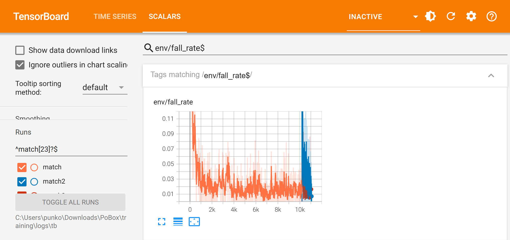
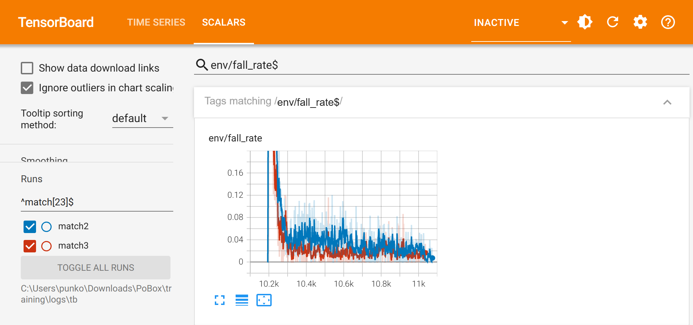

PoBox: the sixty-minute follow-up
1 October 2026 · 17:43 to 18:45 · two short runs from the end of the eight-hour Matt v Zombie run, compared with it · charts are screenshots of TensorBoard
In short. The eight-hour run (its own report: Matt v Zombie: the eight-hour training run) left two fighters who stand, hold range and land about three punches every two seconds each, with no defence and no knockdowns, and it had stopped improving after about three hours. Sixty more minutes were spent on two changes meant to get knockdowns and defence. One made things worse and was stopped; the other changed nothing that matters. The game is still using the eight-hour run's final policies.
| Run | When | Length | What it was | Outcome |
|---|---|---|---|---|
| bag_matt, bag_zombie | 09:48 to 11:18 | 45 min each | each fighter alone with a heavy bag | both stand unaided and hit the bag |
| match | 11:18 to 17:39 | 6 h 21 min | the two in one ring, a policy each; 1.0 billion fighter-steps | the fighters in the game |
| match2 | 17:43 to 18:15 | 31 min, stopped | from match's end: knockdown fix, and being hit priced as high as hitting | both stopped punching; rejected |
| match3 | 18:16 to 18:45 | 29 min | from match's end: the knockdown fix only | no real change; not imported |
In every chart:match (the eight hours)match2match3. The bottom axis is training iterations: the eight-hour run is 0 to 10,193, and both follow-ups start where it ended.
1. Hits per second


FOR A TODDLER
This line is how many times a boxer bops the other one. Up is more bops. The orange line goes up, up, then stays. The blue line falls down: those two got scared and stopped bopping.
FOR A CHILD
It counts punches that really land, per fighter, each second. At first they could not reach each other, so it was zero. They learned to land about one and a half a second and then could not do better. In the blue run we made getting hit hurt their score much more, and they worked out that the safest thing was not to fight.
FOR AN ADULT
Landed hits per fighter per second: a glove arriving at head or body at over 1 m/s after a 30 cm wind-up. The match reaches 1.5 by hour 3 and is flat after (1.50, 1.53, 1.68, 1.60, 1.46 for hours 2 to 6). match2 priced a hit taken at the full value of a hit landed; the rate held at 1.1 for 20 minutes, then fell to 0.22 while reward per episode rose from 330 to 364. match3 kept the old price and is back at 1.51.
2. Knockdowns per minute


FOR A TODDLER
This line is how often a boxer gets knocked over. It is nearly on the floor. Almost nobody falls down. We wanted it to go up. It did not.
FOR A CHILD
It counts how often one fighter puts the other on the floor right after hitting them. It is about once every twenty minutes of boxing, which is almost never. We found a reason the fighters might not be trying, and fixed it, but the number stayed the same. So that was not the real reason.
FOR AN ADULT
Falls by the opponent within 1.5 s of being hit, per minute. The match averages 0.04 to 0.05 from hour 1 on. The reward did discourage knockdowns: a fall ended the episode for both, so the fighter who caused it lost the rest of the episode's income (about 0.8 a step) for a bonus of 4. match3 removed that loss and raised the bonus to 10: 0.045 a minute, unchanged. With 1.5 hits a second almost any fall follows a hit, so this chart is really the fall rate under another name.
3. Fall rate


FOR A TODDLER
This line is how often a boxer falls over all by itself. Down is good. It goes down fast and stays down. They are good at standing up.
FOR A CHILD
Each practice fight lasts twelve seconds. This is how many of them end early because someone fell. When two fighters who had only ever hit a bag first met, they fell over all the time. A few minutes later they almost never did. Each follow-up starts with a wobble because we made them try new things again.
FOR AN ADULT
Share of 12-second episodes ending in a fall, with exploration noise, sensor noise and random shoves on. The match averages 0.10 over its first hour and 0.013 at the end. Each follow-up reset the exploration noise from 0.25 to 0.30, which put the rate at 0.7 for the first minute; match3 is back at 0.013, match2 was at 0.02 when stopped. Without noise the eight-hour policies do not fall at all (table below).
The policies with the noise off, and in Unity
| Where | Policies | Fall rate | Hits a second, each | Knockdowns a minute |
|---|---|---|---|---|
| MuJoCo, 300 s (25 episodes), no exploration noise | match (eight hours) | 0.00 | 1.54 at 7.7 m/s | 0.00 |
| MuJoCo, 300 s (25 episodes), no exploration noise | match3 | 0.04 (one episode: Zombie went down) | 1.53 at 8.8 m/s | 0.20 (that one fall) |
| Plain C MuJoCo, the library the game loads, 300 s (25 episodes) | match and match3 | 0.00 for both | not counted by this tool | not counted |
| Unity, 300 s of the same episodes (25 of them) | match (eight hours) | 0.00 | Matt 1.25, Zombie 1.48 | scoring off for this test |
With the noise off, match3 lands as often as the eight-hour policies and its gloves arrive faster (8.8 m/s against 7.7). It also produced one knockdown in its 25 episodes where the eight-hour policies produced none; the same policies in the plain C library did not fall at all, so that is one event, not a trend.
The Unity row is the transfer check run in the editor at 18:21: the fight is stepped by MuJoCo inside Unity, and the numbers agree with MuJoCo's own. The scorekeeper's four numbers were re-measured from that session (823 hits): a punch counts from 4.8 N·s, and a fighter is rocked at 22.9 and goes down at 23.4 (impulse times zone weight).
What is in the game, and what next
In the game now: the eight-hour run's final policies (iteration 10,193) for both fighters, as they were before the follow-up. match3's land as often and a little faster; in the game the scorekeeper's numbers are re-measured from whichever policies are in it, so faster gloves alone would not change how a bout reads, and they were not swapped in. match2's are marked rejected.
What the sixty minutes bought: two answers. Pricing a hit taken as high as a hit landed does not teach defence here; it teaches the fighters to stop. And the missing knockdowns are not an incentive problem.
What a next run should change: put the game's "hurt" rule into training, so a heavy shot to the head weakens the legs for a moment and a knockdown becomes something a fighter can cause and has to guard against; and price a hit taken somewhere between a half and the full value (0.5 trades blows for ever, 1.0 stops the fight).
Numbers are from training/logs/match.csv, match2.csv and match3.csv; "last 100 iterations" means the mean of the final 100 rows. Charts: TensorBoard's SCALARS page, smoothing 0.6.